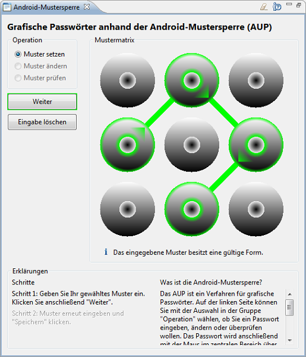
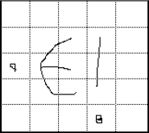
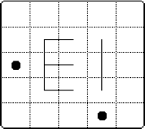

Das in JCrypTool implementierte grafische Passwortverfahren ist der Android-Mustersperre (englisch „Android Unlock Pattern“, AUP) nachempfunden, mit dem sich der Zugang zu Android-Geräten sperren lässt. Im Folgenden wird dieses Verfahren genauer erläutert und seine Sicherheit im Vergleich zur PIN-Eingabe analysiert. Anschließend werden kurz einige weitere Methoden zur Erzeugung grafischer Passwörter vorgestellt.
Bemerkung: Dies ist momentan das einzige Plug-in, das nicht auf allen drei Betriebssystemen zur Verfügung steht. Während unter Windows und macOS die Maus-Events dieser Animation von SWT korrekt abgefangen werden, passiert das unter Linux nicht, so dass dieses Plug-in dort vorerst nicht zur Verfügung steht.
Dieses Authentifizierungsverfahren wird beim Android-Betriebssystem seit Oktober 2008 in der Version 1.0 als Entsperrmechanismus angeboten. Ziel dieser Methode ist es, Unbefugten den Zugriff auf Daten des Smartphones zu verweigern. Im Folgenden werden Aufbau und Sicherheit des AUP erläutert.

Das AUP besteht aus dem Muster, das sich aus einer Verbindung von neun quadratisch angeordneten Feldern ergibt. Dieses Muster wird dann wie ein Passwort zum Entsperren verwendet.
Bei der AUP-Musterauswahl müssen die folgenden Regeln beachtet werden:
Da auf vielen Smartphones ein vom Hersteller modifiziertes Android läuft, wird das Google Nexus S mit nicht-modifiziertem Android 2.3.4 als Referenzplattform verwendet: Nach fünfmaliger Falscheingabe des grafischen Passwortes muss der Benutzer 30 Sekunden warten. Zusätzlich besteht dann die Möglichkeit, das Smartphone mithilfe des zugehörigen Google-Passwortes zu entsperren. Der Benutzer hat aber auch noch weitere 15 Versuche, um das Muster einzugeben. Nach jeweils fünf Fehlversuchen muss 30 Sekunden gewartet werden. Nach insgesamt 20 Fehlversuchen kann nur noch das Google-Passwort zum Entsperren genutzt werden. Die Sicherheit dieses Passworts wird nicht näher betrachtet, da es sich dabei um ein textuelles Passwort handelt.
Anhand der Regeln für die AUP-Musterauswahl ergeben sich insgesamt 389.112 mögliche Muster für das AUP. Dieser Wert wurde mittels eines Brute-Force-Programms ermittelt. [Hinweis: Wenn Sie dafür eine Formel kennen, informieren Sie uns bitte darüber.]
Zum Vergleich: Bei einer vier bis neun stelligen PIN, die aus Ziffern von 1 bis 9 gebildet wird und bei der jede Ziffer nur einmal vorkommen darf, gibt es 985.824 verschiedene Möglichkeiten. Diese PINs werden im Folgenden als eingeschränkte PINs bezeichnet. Die Regeln für die eingeschränkten PINs ähneln denen für AUP-Muster; ihre Anzahl lässt sich durch die Summe der Variationen ohne Zurücklegen[1] über die PIN-Längen vier bis neun berechnen:
$$\sum_{k = 4}^{9} \frac{9!}{(9 - k)!}$$Die folgende Tabelle illustriert die Anzahl der Möglichkeiten des AUP im direkten Vergleich zu der oben definierten, eingeschränkten PIN. Die Spalte „Faktor“ beschreibt, wie viel mehr Muster sich ergeben, wenn die Länge um 1 erhöht wird. Die Spalte „AUP/PIN“ gibt den Quotienten zwischen der Anzahl der AUP- und PIN-Permutationen an.
| PIN | AUP | AUP/PIN | |||
| Stellen | Anzahl | Faktor | Anzahl | Faktor | |
| 4 | 3.024 | 5 | 1.624 | 4,40 | 0,537 |
| 5 | 15.120 | 4 | 7.152 | 3,64 | 0,473 |
| 6 | 60.480 | 3 | 26.016 | 2,80 | 0,430 |
| 7 | 181.440 | 2 | 72.912 | 1,93 | 0,402 |
| 8 | 362.880 | 1 | 140.704 | 1 | 0,388 |
| 9 | 362.880 | / | 140.704 | / | 0,388 |
| Summe | 985.824 | 389.112 | 0,395 | ||
Die Tabelle zeigt, dass das AUP ein geringeres Wachstum hat. Dadurch schneidet es im Direktvergleich zur PIN mit zunehmender Länge immer schlechter ab. In der Summe über alle möglichen Muster kann das AUP nur etwa 40% der Variationen der eingeschränkten PIN erzielen.
Es sollte aber bedacht werden, dass sich Menschen Muster bzw. Bilder nachweisbar besser merken können.[2, S. 5] Folglich lassen sich auch längere Muster gut merken, weshalb der Direktvergleich wahrscheinlich keinen hohen Aussagewert besitzt.
Auch sollte bedacht werden, dass eine „normale“ PIN deutlich mehr Möglichkeiten besitzt. Die Anzahl der Variationen einer normalen PIN mit 10 Ziffern der Länge \(l\) beträgt \(10^l\).
Das Ergebnis eines Vergleichs der Gesamtanzahl aller 4-9 stelligen eingeschränkten PINs mit der Gesamtheit aller AUP-Muster ergibt, dass es etwa 2.856 so viele PIN-Variationen wie AUP-Variationen gibt. Dadurch, dass es beim AUP weniger Möglichkeiten bei der Passwortwahl gibt, ist es gegen einen Brute-Force-Angriff anfälliger als PIN- oder Passwort-Authentifizierungsverfahren. In der Praxis ist ein Brute-Force-Angriff über die reguläre Eingabe nicht möglich, da nach spätestens 20 Versuchen das Email-Passwort benötigt wird.
1. Shoulder-Surfing
Als Shoulder-Surfing werden Angriffe bezeichnet, bei denen eine Person bei der Eingabe ihres Passworts beobachtet wird, um es vollständig oder teilweise zu erhalten. Dies kann direkt durch den Angreifer oder beispielsweise mit Hilfe von Kameras erfolgen. Da für die Eingabe des AUP ein sehr großer Bereich des Displays verwendet wird, sind Rückschlüsse auf das Entsperrmuster einfacher als wenn PINs oder Passwörter verwendet werden.
2. Smudge-Angriff
Bei der Nutzung von Geräten mit Touchscreen bleiben meist ölige Rückstände auf der Oberfläche zurück. Diese können als Seitenkanal für einen Angriff verwendet werden, um kürzlich oder häufig berührte Bereiche des Bildschirms zu bestimmen. Die resultierenden Informationen können dann beispielsweise verwendet werden, um Informationen über das Authentifizierungsmuster oder -passwort zu erhalten.
3. Angriff auf entwendete Authentifizierungsdaten
Gelingt es, Authentifizierungsdaten auszulesen und somit vom authentifizierenden System zu trennen, so können diese direkt untersucht werden. Dann kann beispielsweise ein Brute-Force-Angriff durchgeführt werden, der alle Möglichkeiten durchprobiert, bis die berechneten Daten mit den entwendeten Daten übereinstimmen. Problematisch im Zusammenhang mit Android ist, dass die Muster für ihre Speicherung lediglich ungesalzen gehasht werden. Dies ist ein Schwachpunkt, der sich ausnutzen lässt, um mittels eines Wörterbuchangriffs in Sekundenschnelle das Muster eines zugehörigen Hashwertes zu bestimmen.[3]
|  |  | |
| Nutzereingabe | Interne Repräsentation |
Beim DAS werden zur Nutzerauthentifizierung „Passwörter“ gezeichnet. Diese werden als Abfolge von berührten Feldern in einem Raster gespeichert. Einschränkungen bezüglich der Musterlänge oder Wiederholung von Feldern gibt es nicht. Darüber hinaus kann ein Muster aus mehreren, nicht zusammenhängenden Teilen bestehen. Das AUP ist ein Spezialfall des DAS, denn seine Länge ist beschränkt, jedes Feld kann nur einmal verwendet werden und das Muster besteht aus nur einer zusammenhängenden Linie. Die Entwickler des DAS empfehlen eine Rastergröße von \(5 \times 5\).[2]
Die Entwickler geben in ihrer Sicherheitsanalyse an, dass das DAS ein höheres Sicherheitsniveau als Passwörter besitzt.[2] Dies kann darauf zurück geführt werden, dass Menschen sich Grafiken und Figuren besser merken können und sich somit auch längere Muster gut behalten lassen. Es sollte aber auch bedacht werden, dass sich spiegelsymmetrische Bilder besser merken lassen als asymmetrische.[4] Dadurch kann der Musterraum für Angriffe erheblich verkleinern werden, was in der Folge auch die Sicherheit verringert.
Windows 8 greift die Idee der grafischen Passwörter auf und bietet sie als Login-Möglichkeit an. Der Nutzer kann sich für diesen Mechanismus ein Bild auswählen und im Anschluss Bereiche darauf mit verschiedenen Gesten hervorheben. Im Gegensatz zum DAS sind keine freien Gesten möglich. Die Gesten sind auf Kreise, Linien und Punkte limitiert. Ein weiterer Unterschied ist, dass lediglich „Charakteristiken“ für die Authentisierung gespeichert werden und nicht die berührten Felder. Bei Linien sind dies der Anfangs- und Endpunkt, sowie ihre Richtung. Darüber hinaus ist das Raster beim Picture-Passwort deutlich feiner. So wird die längere Seite des Bildes in 100 Abschnitte unterteilt. Diese Skalierung wird anschließend auf die kürzere Seite übertragen, um das Raster zu bilden, welches über das Bild gelegt wird. Nach Aussage von Sinofsky bietet auch dieses Verfahren eine deutlich größere Sicherheit als traditionelle Passwörter.[5]
Quellen
| [1] | Wikipedia. Abzählende Kombinatorik, 3. September 2012. http://de.wikipedia.org/wiki/Abz%C3%A4hlende_Kombinatorik#Variation_ohne_Zur.C3.BCcklegen, abgerufen am 26. Oktober 2012. |
| [2] | I. Jermyn, A. Mayer, F. Monrose, M. K. Reiter und A. D. Rubin. The Design and Analysis of Graphical Passwords. In Proceedings of the 8th USENIX Security Symposium, August 1999. http://static.usenix.org/events/sec99/full_papers/jermyn/jermyn_html/. |
| [3] | Michael Spreitzenbarth. Cracking the Pattern Lock on Android, 28. Februar 2012. http://forensics.spreitzenbarth.de/2012/02/28/cracking-the-pattern-lock-on-android/, abgerufen am 11. Oktober 2012. |
| [4] | Xiaoyuan Suo, Ying Zhu und G. Scott. Owen. Graphical Passwords: A Survey. In Proceedings of the 21st Annual Computer Security Applications Conference, Dezember 2005. |